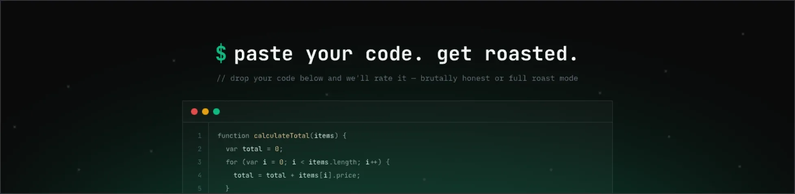

Workflows agênticos
Stack: React, Next.js, tRPC, Node.js
Educador: Diego Fernandes

Sobre o Projeto
Este projeto está relacionado ao evento da Rocketseat voltado para Workflows Agênticos, uma abordagem moderna de desenvolvimento que utiliza Inteligência Artificial em modo agente para apoiar decisões arquiteturais e automatizar partes do processo de criação de software.
Dentro do evento, a Trilha Full-Stack propõe o desenvolvimento de um mini SaaS chamado DevRoast. A aplicação permitirá que usuários colem trechos de código e recebam uma avaliação gerada por IA, incluindo nota, feedback técnico e comentários bem-humorados sobre a qualidade da implementação.
Além da análise do código, a plataforma também gera uma página pública compartilhável com o resultado da avaliação e um ranking entre os códigos enviados pelos usuários, incentivando interação e competitividade entre desenvolvedores.
Durante o desenvolvimento serão explorados conceitos de arquitetura full-stack utilizando tecnologias modernas como React, Next.js, Node.js e banco de dados, além da integração da IA diretamente no fluxo principal da aplicação.
O conteúdo da trilha é conduzido pelo educador Diego Fernandes, especialista em desenvolvimento web e educação em tecnologia na Rocketseat.
Funcionalidades
- ✔ Inserção de trechos de código para análise
- ✔ Avaliação automática do código utilizando Inteligência Artificial
- ✔ Geração de nota e feedback técnico sobre qualidade do código
- ✔ Comentários diretos e bem-humorados gerados pela IA
- ✔ Criação de página pública compartilhável com o resultado
- ✔ Sistema de ranking entre os códigos analisados
- ✔ Aplicação full-stack com integração entre front-end, back-end e banco de dados